How to Make Fruit Leather Flowers
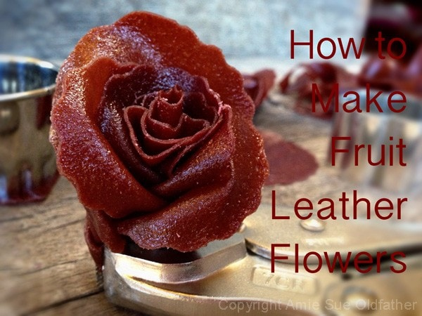
For fruit leather flavor ideas, here are some posts to get the creative juices flowing. Just remember, if you pick one of my leather recipes for your fruit leather flowers, pick one without nuts, seeds or other chunky ingredients. The fruit leather needs to be pure and smooth. If you want to make your own flavor of fruit leather but need a little help on how to go about it, you can visit here for instructions. Now on to the fun part.
I hope these pictures are actually a help; I did my best. I must say that it is a REAL challenge to show some things in photos, especially when you take your own, and you need three hands! So, I had to get creative. My girlfriend, Ruthie, had given me this neat device that holds your iPhone while taking pictures, but since the move, I will be darned if I can find the thing. I am sure it will surface soon. But like everything else, when you want something now… you want something NOW!
I quickly made my way to the garage because I remember a few years ago at a garage sale Bob and I purchased some weird gizmo that looked like a sea creature. It had bendable metal arms, a magnifying glass and a few clips on it. I looked and looked, but once again… because I wanted it now, I couldn’t find it. I explained to Bob what I was looking for and why. I needed a “third hand, ” and the clip on the end of those “arms” would be perfect. So, to the tool box, we went. Drawer and after drawer we searched through them. We have a tool for everything so I knew we would figure something out! Got it! Vice-grips! Shew… now back to my tutorial. :) Thank you Mr. Bob…. thank you Mr. Craftsman.
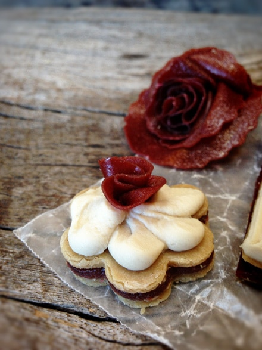
Fruit leather tips ~
- Make sure that the fruit leather is pliable. If it is dry and stiff, it won’t bend.
- Make sure the fruit leather is smooth and thick enough to hold to hold its shape.
- Use different colors of fruit leathers to create a colorful arrangement.
- Make a green fruit leather and use it for leaves. I tend to use fresh mint leaves around mine.
Cookie cutters/templates and scissors ~
- If using a circular cookie cutter, make sure it has semi-sharp edges, so it cuts easily through the fruit leather. I found that plastic ones weren’t sharp enough.
- You can use any size of cookie cutter, several are best, so you can make different sized flowers.
- You can use a cookie cutter with scalloped edges too, just to add a little pizzaz.
- If you don’t have a circular cookie cutter, you can use anything round object as a template. I have used water bottle caps before. Just set the round object on the leather and with the tip of a paring knife, trace around the lid, or hold the leather against the template, pick it up and cut around it with scissors.
- You can also freehand cut the circles as well.
Other items needed ~
- Have a small bowl of water nearby. I found that dipping my finger in the water and wetting parts of the flower helped it stick together.
- Toothpicks are handy to have. You can push them through the base to help hold them together.
Keep in mind ~
- Most importantly… no two flowers are the same out in nature so don’t feel that your creations have to be perfect or the same. Be creative and have fun!
- Don’t make the flower too big; you want to be able to eat them. :)
Storage ~
- To store the flowers until you need them to decorate, place in shallow storage containers that can be sealed.
- They can be kept in the fridge or on the countertop for a long time. Treat them as you would any other fruit leather as far as expiration goes.
- Don’t let them touch or layer them on top of each other. They will stick to together.
Where to use them ~
- Decorate cakes, pies, or tarts.
- After frosting a cupcake, place them on top of the frosting.
- Dressing up any serving plate with one.
Start by cutting out your circular shapes.
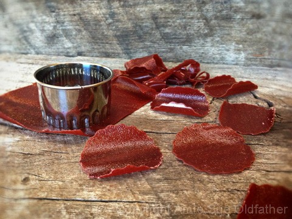
To make the center of the flower, roll one circle into a cone shaped cylinder.
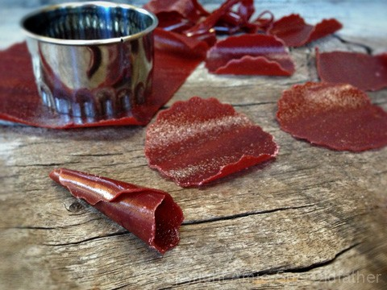
Here is another angle.
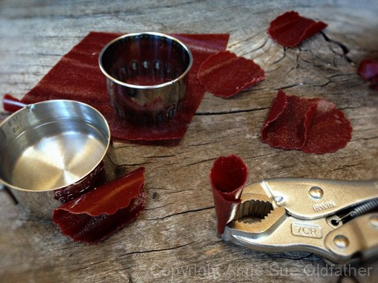
In the photo below, I added two petals to the core of the flower.
Remember, one circle equals one petal.
The first one I wrapped around the right side and bent the tip backward,
creating a fold in the fruit leather as it came around the front.
I repeated these same steps on the left side.
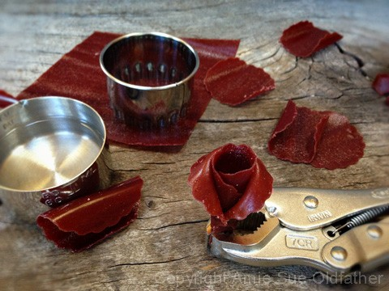
Here is another angle.
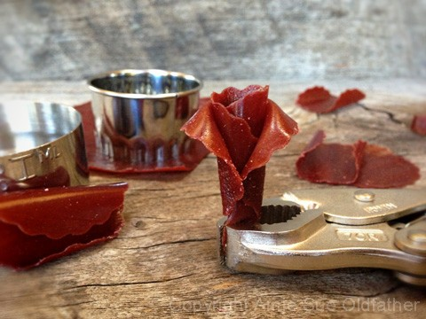
And another angle. :)
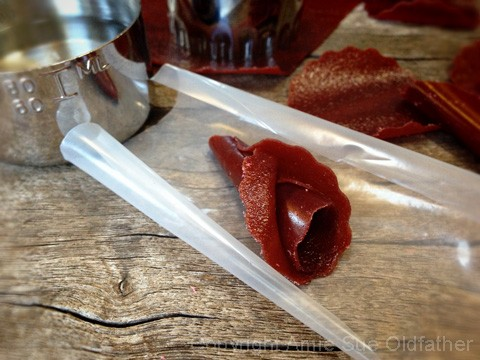
Keep layering petals around the flower, just on the left, right and back side of the flower.
Do the same folding technique as mentioned above to make it look like the petals
are bending/folding backward.
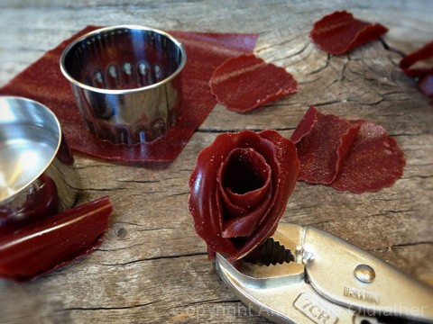
If your petals are not cooperating, start over. The fruit leather is pretty tough but on
the other hand, be gentle. There are times that I must have redone a flower two to three times.
As you can see in the photo below, the more you bend the edges back, the more realistic
it looks.
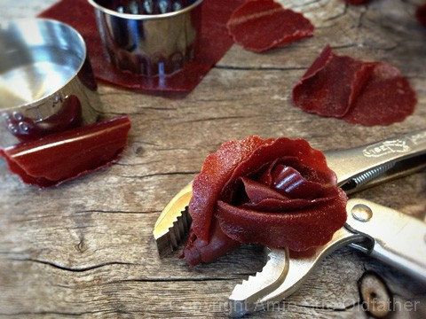
Here is how it looks from the top. If find yourself with a large hole in the center of
your flower, create a smaller circle, pinch it closed and stick it down in the center
cone part of the flower. Problem solved!
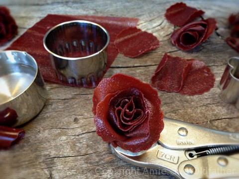
The more petals you add, the larger the flower. So don’t get caught up in having to use
the same quantity of fruit leather petals for each flower.
The varied sizes will make the overall appearance even more attractive and realistic.
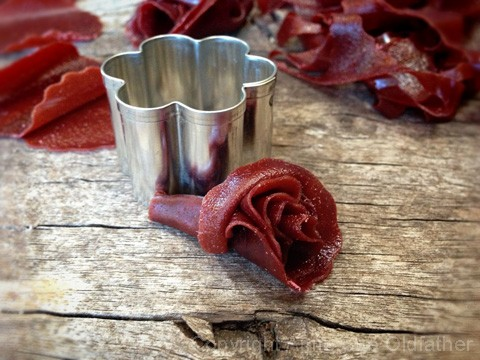
Here is how to make a carnation fruit leather flower. I used an average of 6
circles per carnation flower. In nature they have a lot of folds in them.
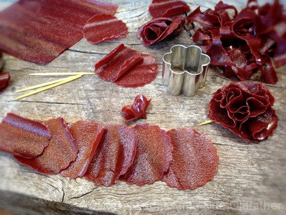
You don’t need my fancy dancy tool (vice-grips) to make these… this is my third hand.
Pinch each circle into an “X” shape as shown below. Give the pointy part underneath
a good pinch to help it hold together.
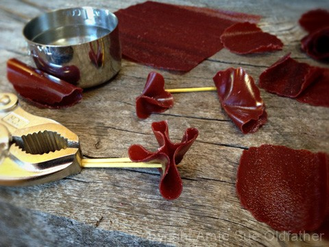
None of them will really look the same, and they might start to unfold a bit while you
are waiting to put it together as one big flower. That is ok; you can tuck and shove
things into place as you build the carnation.
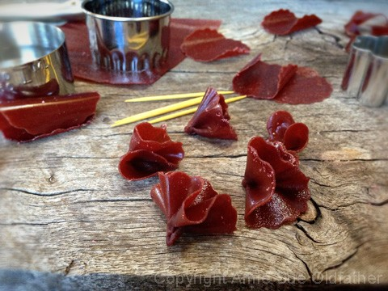
When you are ready to put all little pieces together as one, tuck them up against one
another, keeping a grip on the pointy ends underneath. The folds will basically
snug up against one another and create the look of a carnation as shown below.
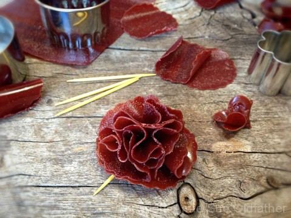
This is what it looks like underneath. I poked a few toothpicks in from different
angles to hold the flower together. I ended up wetting those tips a little bit and gave them
a final pinch, and they held together.
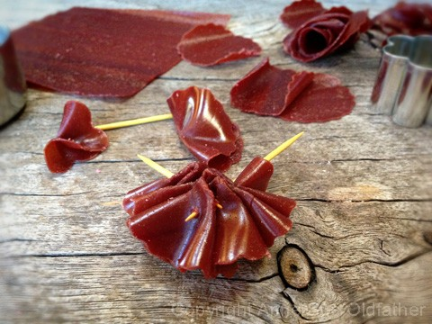
Once you feel the tips are secure, you can gently remove the toothpicks.
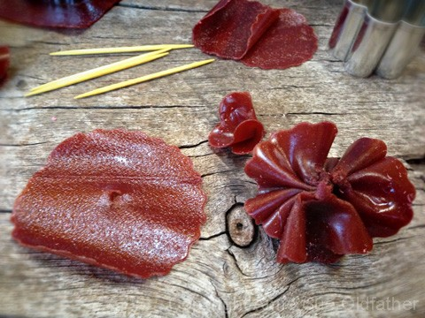
Once again, this is the finished look.
Don’t they make amazingly gorgeous decorations?!
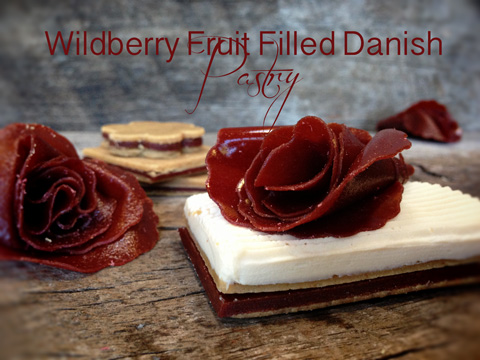
© AmieSue.com